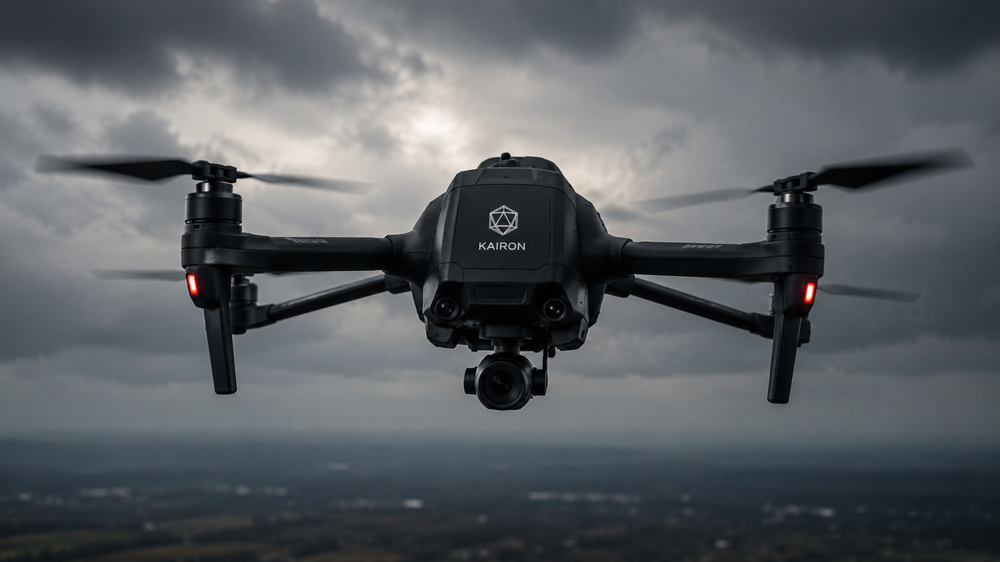
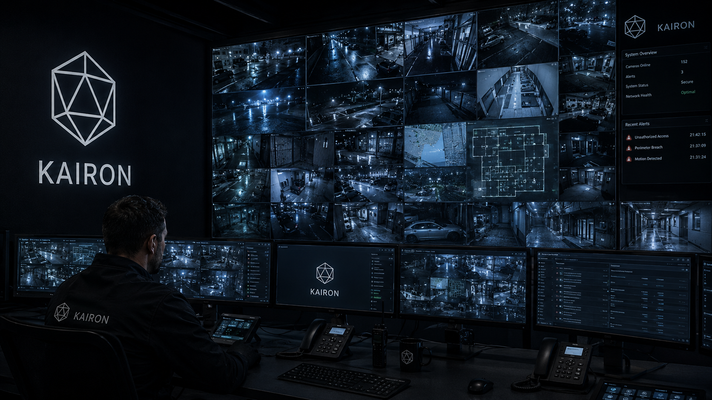

Infrastructure
Kairon's operational superiority is underpinned by a proprietary technology platform developed over a decade of operational refinement — integrating aerial systems, command infrastructure, server architecture, and monitoring capabilities.

Kairon operates a fleet of proprietary surveillance and reconnaissance drones, engineered for extended endurance, low acoustic signature, and all-weather operations. Integrated with the command centre via encrypted telemetry links, our UAV fleet provides continuous aerial intelligence in support of ground operations.
The Kairon Command Centre, located within our hardened Belfast headquarters, provides 24/7 oversight of all active operations globally. The facility integrates live drone feeds, operator communications, threat intelligence streams, and client liaison channels into a unified operational picture managed by dedicated analysts.
Kairon operates geographically distributed server infrastructure across three certified Tier IV data centres, ensuring operational continuity regardless of regional disruption. All client data is encrypted at rest and in transit using classified-grade cryptographic protocols, with zero cloud dependency for sensitive operational data.

Kairon's monitoring technology portfolio encompasses acoustic sensors, optical surveillance networks, behavioural analytics platforms, and signals intelligence collection systems. These capabilities are deployed in support of both physical and cyber security operations, providing clients with persistent situational awareness.
System Architecture